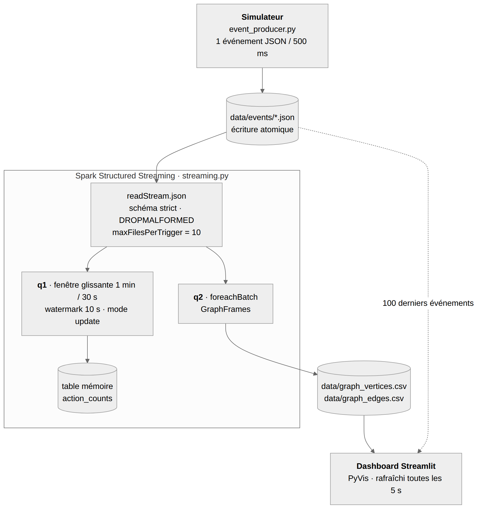
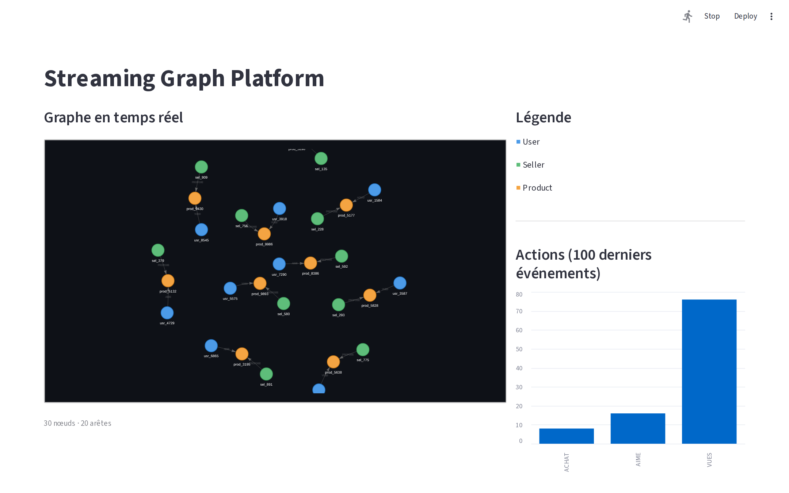

Une place de marché en ligne produit en continu des interactions entre utilisateurs, produits et vendeurs : consultations, mentions « j'aime », achats. Ces données n'ont de valeur que si elles sont analysées pendant qu'elles arrivent, pour suivre l'activité en temps réel et comprendre la structure des relations entre acteurs. Ce projet construit une plateforme complète qui simule ce flux, le traite avec Spark Structured Streaming et le représente sous forme de graphe dynamique.
| Composant | Technologie | Rôle |
|---|---|---|
| Moteur de traitement | PySpark 3.5.1, Structured Streaming | Lecture du flux, fenêtrage, watermark, micro-batches |
| Graphe | GraphFrames 0.8.3 (Spark 3.5, Scala 2.12) | Sommets et arêtes typés à partir de DataFrames |
| Simulation | Python, Faker (fr_FR) | Génération des événements |
| Dashboard | Streamlit, PyVis, pandas | Visualisation rafraîchie toutes les 5 s |
| Tests | pytest | 25 tests sur une SparkSession locale réelle |
La plateforme se compose de trois processus indépendants qui communiquent par le système de fichiers : un simulateur qui produit des fichiers JSON, une pipeline Spark qui les consomme et un dashboard qui lit les résultats. Le script run.sh les lance ensemble, avec un journal par composant.

La pipeline démarre deux requêtes de streaming sur la même source :
update, et écrit dans une table en mémoire (action_counts).foreachBatch : elle construit un GraphFrame et exporte ses sommets et ses arêtes en CSV pour le dashboard.Le choix d'un échange par fichiers, plutôt que par un broker comme Kafka, garde la plateforme exécutable sur un poste seul, sans infrastructure. La source fichier de Spark offre les mêmes garanties de reprise grâce aux checkpoints.
| Champ | Type | Exemple |
|---|---|---|
timestamp | Timestamp (UTC) | 2026-10-11T08:59:32.593000+00:00 |
user_id | String | usr_9482 |
user_city | String | Paris |
product_id | String | prod_5501 |
product_cat | String | Électronique |
seller_id | String | sel_214 |
action_type | String | VUES, AIME ou ACHAT |
price | Double | 450.0 |
simulator/event_producer.py produit un événement toutes les 500 ms, soit 2 événements par seconde. Plusieurs choix le rendent réaliste et robuste :
usr_1000 à usr_9999, sel_100 à sel_999), pour que des nœuds se répètent et que le graphe ait des connexions.+00:00) : sans décalage, Spark interpréterait l'heure dans le fuseau de la machine, ce qui fausserait les fenêtres..event_….json.tmp), puis renommé. Spark et le dashboard ignorent les fichiers cachés et ne lisent donc jamais un JSON à moitié écrit. Ce point a corrigé un défaut réel, des lignes entièrement nulles apparaissant dans le flux.La session est créée dans pipeline/spark_session.py. Chaque paramètre répond à un besoin précis :
| Paramètre | Valeur | Justification |
|---|---|---|
spark.jars.packages | graphframes:graphframes: | GraphFrames n'est pas inclus dans Spark ; le JAR correspondant à Spark 3.5 et Scala 2.12 est téléchargé depuis Maven au premier démarrage. |
spark.sql.shuffle. | 4 | La valeur par défaut (200) crée 200 tâches par agrégation, pour une dizaine de lignes par micro-batch en local. 4 partitions suffisent et réduisent la latence de chaque déclenchement. |
spark.sql.streaming. | false | Le schéma est déclaré explicitement (section 5) ; l'inférence est désactivée pour qu'aucun type ne soit deviné. |
spark.sql.session. | UTC | Le simulateur horodate en UTC : les fenêtres sont calculées en UTC quel que soit le fuseau de la machine. |
spark.ui. | false | Supprime la barre de progression qui noyait les journaux de la pipeline. |
PYSPARK_PYTHON (variable d'environnement) | interpréteur courant | Les workers Python doivent utiliser le même interpréteur que le driver. Sinon PySpark prend le python3 du système et échoue (PYTHON_VERSION_MISMATCH) si le virtualenv n'est pas activé. |
spark.executor.memory | 2g | Prévu pour un déploiement en cluster. En mode local, l'exécuteur tourne dans la JVM du driver et ce réglage est sans effet ; la mémoire du driver (1 Go par défaut) a suffi à nos essais. |
Le schéma est déclaré dans pipeline/schema.py sous forme de StructType, champ par champ, avec des types précis (TimestampType, DoubleType, StringType).
En Structured Streaming, le schéma d'une source fichier doit être connu avant le démarrage de la requête : il fixe le plan d'exécution pour toute la durée du stream. L'inférence lirait les premiers fichiers pour deviner les types. Elle pourrait alors classer le prix en entier si les premiers prix étaient ronds, ou le timestamp en chaîne, et le plan resterait figé avec ce mauvais type. Un schéma explicite garantit des types corrects dès le premier fichier. Il sert aussi de contrat entre le simulateur et la pipeline : un test vérifie que chaque événement produit le respecte.
La lecture (read_stream) ajoute deux options :
mode = DROPMALFORMED : un JSON invalide ou mal typé est écarté au lieu de produire une ligne de valeurs nulles qui fausserait les comptages.maxFilesPerTrigger = 10 : chaque micro-batch lit au plus 10 fichiers. Au redémarrage après une interruption, l'arriéré est absorbé progressivement au lieu d'un premier batch démesuré. Avec un déclenchement toutes les 5 s et 2 événements/s, le débit de lecture correspond exactement au débit de production.La requête q1 compte les événements par type d'action sur une fenêtre de 1 minute qui avance toutes les 30 secondes (window(timestamp, "1 minute", "30 seconds")).
Pour un suivi d'activité, la fenêtre glissante donne une courbe plus lisse et plus réactive, au prix d'un état deux fois plus grand.
Le watermark de 10 secondes (withWatermark("timestamp", "10 seconds")) indique à Spark jusqu'où il doit attendre les événements en retard : un événement plus vieux que l'horodatage maximal déjà vu moins 10 secondes est ignoré. Il a deux effets :
Le watermark doit être déclaré avant le groupBy pour que Spark l'applique à l'agrégation.
update| Mode | Ce qu'il émet | Pourquoi nous ne l'avons pas retenu / retenu |
|---|---|---|
append | Une fenêtre une seule fois, quand le watermark a dépassé sa fin | Résultat définitif mais tardif : au moins 1 min + 10 s après le début de la fenêtre. Trop lent pour un suivi en temps réel. |
complete | Toute la table de résultats à chaque déclenchement | Toutes les fenêtres depuis le démarrage sont conservées et réémises : volume croissant sans fin. |
update | Les seules lignes modifiées depuis le déclenchement précédent | Retenu : chaque fenêtre en cours est mise à jour toutes les 5 s, et l'état reste borné par le watermark. |
Nous avons exécuté la plateforme complète pendant plus de trois minutes. Plus de 500 événements ont été produits. La table action_counts a été lue toutes les 30 secondes et la progression des requêtes relevée à la fin. Extrait de la table, fenêtres les plus récentes en premier :
+-------------------+-------------------+-----------+-----------+ |debut |fin |action_type|event_count| +-------------------+-------------------+-----------+-----------+ |2026-10-11 08:59:30|2026-10-11 09:00:30|ACHAT |2 | |2026-10-11 08:59:30|2026-10-11 09:00:30|AIME |2 | |2026-10-11 08:59:30|2026-10-11 09:00:30|VUES |6 | |2026-10-11 08:59:00|2026-10-11 09:00:00|ACHAT |4 | |2026-10-11 08:59:00|2026-10-11 09:00:00|ACHAT |1 | |2026-10-11 08:59:00|2026-10-11 09:00:00|ACHAT |8 | |2026-10-11 08:59:00|2026-10-11 09:00:00|ACHAT |3 | |2026-10-11 08:59:00|2026-10-11 09:00:00|ACHAT |5 | |2026-10-11 08:59:00|2026-10-11 09:00:00|ACHAT |6 | |2026-10-11 08:59:00|2026-10-11 09:00:00|ACHAT |2 | |2026-10-11 08:59:00|2026-10-11 09:00:00|AIME |15 | |2026-10-11 08:59:00|2026-10-11 09:00:00|AIME |9 | +-------------------+-------------------+-----------+-----------+
Cette sortie illustre directement le mode update. Les fenêtres se chevauchent de 30 s, et la même fenêtre apparaît plusieurs fois avec des comptes croissants (ACHAT : 1, 2, 3… 8) : chaque déclenchement réémet la ligne modifiée, et le sink memory ajoute ces mises à jour au lieu de les remplacer. Pour connaître la valeur courante d'une fenêtre, il faut donc garder le compte maximal par couple (fenêtre, action). Un sink transactionnel, comme une table Delta avec MERGE, ferait cette mise à jour en place.
Progression de q1 au dernier déclenchement (lastProgress, extrait) :
"batchId": 42, "numInputRows": 10,
"inputRowsPerSecond": 1.9996, "processedRowsPerSecond": 10.07,
"eventTime": { "min": "08:59:30.340Z", "max": "08:59:34.845Z",
"watermark": "08:59:19.838Z" },
"stateOperators": [{ "numRowsTotal": 9, "numRowsUpdated": 6,
"numRowsRemoved": 0, "numRowsDroppedByWatermark": 0,
"numShufflePartitions": 4, "memoryUsedBytes": 4272 }]
Ces mesures confirment les choix de configuration :
Côté graphe, q2 traite un micro-batch de 10 événements en 1,1 s (triggerExecution : 1 120 ms), dont 870 ms pour la construction du graphe et l'export CSV.
pipeline/graph.py construit un graphe orienté à partir de chaque micro-batch.
| Type | Identifiant | Libellé | Couleur (dashboard) |
|---|---|---|---|
| User | user_id | ville de l'utilisateur | bleu |
| Product | product_id | catégorie du produit | orange |
| Seller | seller_id | identifiant du vendeur | vert |
Un même acteur peut apparaître dans plusieurs événements d'un batch : les sommets sont dédupliqués sur leur identifiant. Les valeurs nulles sont filtrées avant la construction.
| Source → destination | Relation | Origine |
|---|---|---|
| User → Product | VUES, AIME, ACHAT | une arête par interaction (une même paire peut en avoir plusieurs) |
| Seller → Product | PROPOSE | dédupliquée : un vendeur propose un produit une seule fois |
Les sommets et les arêtes sont écrits dans data/graph_vertices.csv et data/graph_edges.csv. DataFrame.write.csv() produirait un répertoire de fichiers part-* que le dashboard ne sait pas lire : le graphe d'un micro-batch étant petit, il est rassemblé sur le driver (collect()) et écrit en un seul fichier. L'écriture passe par un fichier temporaire puis un renommage atomique, pour que le dashboard ne lise jamais un CSV incomplet.
Les métriques affichées sont la taille du graphe (nombre de nœuds et d'arêtes) et, côté dashboard, la répartition des actions et des achats par catégorie. La fonction compute_metrics se limite aujourd'hui à l'export : les métriques de graphe propres à GraphFrames (degrés, PageRank, composantes connexes) sont une évolution naturelle (section 10).
Le dashboard (dashboard/app.py) est une application Streamlit. Nous l'avons préférée à Dash ou à une page web sur mesure, car elle permet de construire une interface en Python pur, avec graphiques et mise en page en colonnes, en une centaine de lignes. Il présente :
Le rafraîchissement est automatique toutes les 5 secondes (DASHBOARD_REFRESH_MS). Le script attend cet intervalle, puis relance son exécution (st.rerun()) et relit les fichiers. Cette fréquence correspond au déclenchement des requêtes Spark (5 s) : un rafraîchissement plus rapide n'afficherait rien de nouveau.

La capture montre des composantes en étoile autour des produits (un vendeur, un ou plusieurs utilisateurs). C'est attendu : avec 10 événements par batch et des identifiants tirés parmi plusieurs milliers, deux événements d'un même batch partagent rarement un utilisateur ou un produit.
La suite pytest compte 25 tests, exécutés sur une vraie SparkSession locale, et non sur des simulacres. Les comportements testés sont donc ceux de Spark lui-même.
| Fichier | Ce qui est vérifié |
|---|---|
test_simulator.py | conformité des événements au schéma, cohérence catégorie/prix, répartition des actions, écriture atomique |
test_pipeline.py | fenêtres glissantes et comptages, schéma du stream, lecture en UTC, JSON malformés ignorés, traitement d'un micro-batch |
test_graph.py | sommets, arêtes, déduplication, valeurs nulles, construction du GraphFrame, export CSV |
Résultat : 25 passed (Python 3.12, PySpark 3.5.1). S'y ajoute l'exécution de bout en bout décrite en section 6.
distutils, versions d'Arrow) ont demandé d'ajuster les dépendances. Les workers lancés avec le mauvais interpréteur provoquaient une erreur de version, résolue en fixant PYSPARK_PYTHON.Ce projet nous a fait manipuler concrètement les notions centrales du traitement de flux :
L'exécution réelle a confirmé les choix de configuration par des mesures, notamment un état borné à 9 lignes et un traitement plus rapide que l'arrivée des données. Elle a aussi montré des comportements qu'on ne voit pas sur le papier, comme l'accumulation des mises à jour dans un sink mémoire. La combinaison de Spark, GraphFrames et Streamlit montre enfin qu'une chaîne complète, de la donnée brute au graphe interactif, peut rester simple et exécutable sur un seul poste.